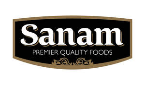

Trade Mark Journal No.2025/025 20 June 2025
UK00004180435 27 March 2025 (5,16,21,29,30,32,35)
Mark 1
Mark 2

- Class 5
- Herbal supplements; dietary and nutritional supplements; medicinal herbs and spices; fortified food products for health and wellness; vitamin and mineral-enriched food and beverages; herbal infusions for medicinal use; functional foods for dietary purposes.
- Class 16
- Packaging materials made of paper or cardboard; printed labels for food packaging; food wrapping paper; advertising materials in printed form, including brochures, posters, leaflets, and promotional flyers; recipe booklets; branded paper bags and cartons for food products.
- Class 21
- Household or kitchen utensils and containers; reusable food containers; spice jars; tiffin boxes; meal prep containers; storage tins; glass, plastic, or metal containers for food; serving ware for food; insulated containers for food or beverages; non-electric portable food warmers; reusable packaging containers; branded kitchenware used for food storage and serving.
- Class 29
- Preserved, dried, frozen, tinned, and cooked fruits and vegetables; dried fruits; nuts, processed and preserved; nut-based snack foods; jellies; jams; milk and dairy products; edible oils and fats, including cooking oils; pickles; vegetable-based snack foods; fruit-based snack foods; prepared meals consisting primarily of vegetables, fruits, pulses, or legumes; canned and tinned fruits and vegetables; preserved beans and pulses; pulses; beans; lentils.
- Class 30
- Sugar, rice, tapioca, sago, flour and preparations made from cereals; yeast; baking powder; salt; mustard; vinegar; sauces (condiments); spices; spice blends; seasonings; ethnic and traditional snacks; flour-based and rice-based snack foods; ready-to-eat packaged meals consisting primarily of rice or pasta; processed grains; bakery goods; chutneys and sauces.
- Class 32
- Non-alcoholic beverages; mineral and aerated waters; fruit beverages and fruit juices; syrups and other preparations for making beverages; de-alcoholized beverages; soft drinks; energy drinks; isotonic beverages; smoothies; vegetable juices [beverages]; whey beverages; non-alcoholic honey-based beverages; non-alcoholic malt beverages; non-alcoholic fruit extracts used in the preparation of beverages.
- Class 35
- Retail and wholesale services related to the sale of food products, namely spices, dried fruits, nuts, lentils, tinned vegetables and fruits, and ethnic snacks; online retail store services related to food and beverages; import and export services of food products; distribution of promotional samples; business consultancy in the field of food and retail; marketing, advertising, and promotional services for food brands.
Indus Foods Ltd